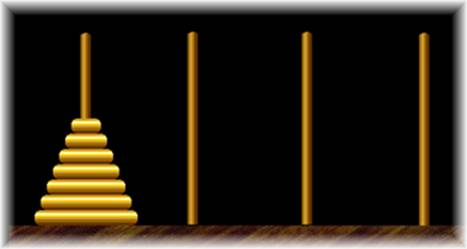

Problem I
The Priest
Mathematician
Input: standard
input
Output: standard output
The ancient folklore behind the
"Towers of

Fig: The Four Needle (Peg)
One of the priests at the
-- First move the topmost discs (say the top k discs) to one of the spare needles.
-- Then use the standard three needles strategy to move the remaining n-k discs (for a general case with n discs) to their destination.
-- Finally, move the top k discs into their final destination using the four needles.
He calculated the value to k in order to minimize the number of movements and get a total of 18433 transfers, so they spent just 5 hours, 7 minutes and 13 seconds against the more than 500000 millions years without the additional needle (as they would have to do 2^64-1 disc transfers. Can you believe it?)
Try to follow the clever priest's strategy and calculate the number of transfer using four needles but according with the fixed and immutable laws of Brahma, which require that the priest on duty must not move more than one disc at a time and that he must place this disc on a needle so that there is no smaller disc below it. Of course, the main goal is to calculate the k that minimize the number of transfers (even thought it is not know for sure that this is always the optimal number of movements).
The input file contains several lines of input. Each line contains a single integer N, which is the number of disks to be transferred. Here 0<=N<=10000. Input is terminated by end of file.
Output
For each line of input produce one line of
output which indicates the number of movements required to transfer the N
disks to the final needle.
Sample
Input:
1
2
28
64
Sample Output:
1
3
769
18433
(World Finals Warm-up
Contest, Problem Setter: Miguel
Revilla)